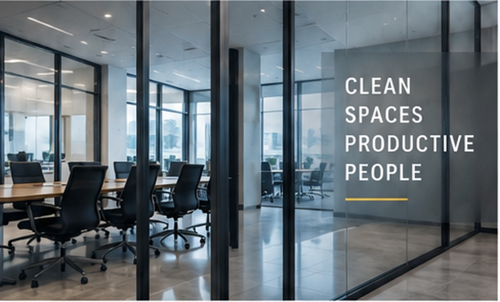
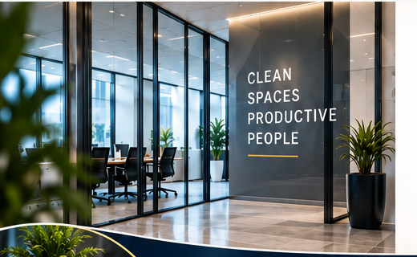

Offices & Common Areas
Workstations, reception areas, conference rooms, hallways, and shared spaces.
Reliable commercial cleaning and facility care designed to keep your workplace clean, professional, and ready for employees, customers, and visitors.
Serving Fresno and surrounding areas with recurring commercial cleaning tailored to your facility, schedule, and priorities.
Choose the level of service that’s right for your facility.

Dependable, consistent cleaning to keep your facility clean, professional and ready.
Request Maintain Pricing →Everything in Maintain, plus rotational detail cleaning, enhanced quality oversight and a monthly Facility Scorecard.
Request Improve Pricing →Everything in Improve, plus priority scheduling, supply monitoring and a Quarterly Executive Walkthrough.
Request Impress Pricing →
As part of our service approach, SiteSure observes and reports visible facility concerns encountered during routine cleaning, helping issues reach the right people early.
A clear process from the first walkthrough through ongoing quality follow-up.
We walk the facility, learn how the space is used, and identify cleaning priorities and service expectations.
You receive a proposed cleaning scope and service frequency based on your facility—not a one-size-fits-all checklist.
Cleaning is performed to the agreed scope with clear service expectations and proactive communication.
We review service quality, communicate visible concerns, and adjust recommendations as facility needs change.
SiteSure is designed around defined scopes of work, routine quality checks, responsive follow-through, and documented facility observations. Higher-level plans can add enhanced oversight such as Facility Scorecards and executive walkthroughs.
SiteSure serves commercial facilities in Fresno and surrounding areas. Following your Facility Assessment, we’ll review your cleaning needs, preferred schedule, and scope of service to confirm availability and next steps.
Pricing is based on your facility size, condition, service frequency, scope, access requirements, and cleaning priorities. A Facility Assessment allows us to build a more accurate proposal.
Yes. Service frequency and scope can be reviewed as occupancy, facility use, events, or cleaning priorities change.
Cleaning-product and consumable responsibilities are documented in your proposal so both sides know exactly what is included before service begins.